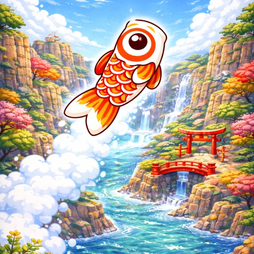
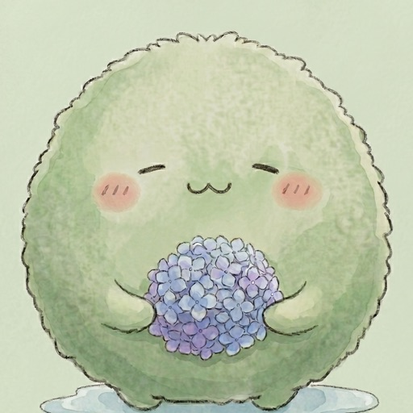
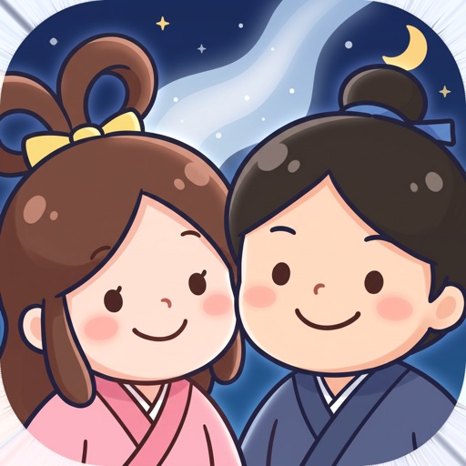
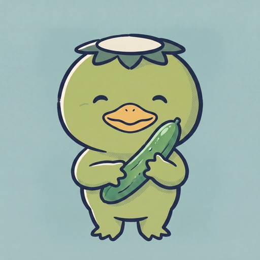
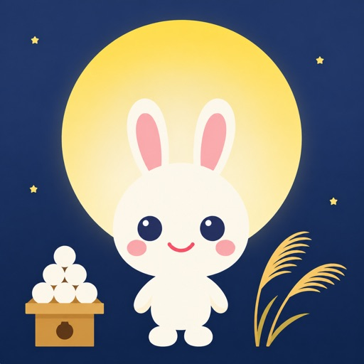

親子であそぶ 季節行事アプリ
こいのぼり、梅雨、七夕、夏休み、お月見。季節の行事を、指一本で遊べる小さなゲームにしました。やさしいことばと、指一本の操作。叱らない・急かさない作りを心がけています。
アプリ（公開順）
-

-

-

-

-

おうちのかたへ
新しい作品から順に、「こどもモード」と「ふつうモード」の2つを備えています。こどもモードは失敗がなく、最後まで一人で遊びきれます。ふつうモードは少しだけ手ごたえがあり、親子で交代しながら遊べます。
広告はできるだけ少なく、あそびの途中をさえぎらない場所に置くようにしています。課金はありません。お子さまの情報を集めることもしていません。
行事の由来は、各アプリの「おうちのかたへ」画面に短くまとめています。遊んだあとの会話の種になればうれしいです。
毎月ひとつ、その季節の行事のアプリを出しています。次の行事のこと、遊んだ感想、困ったことは X（@K2AppDev） へどうぞ。各アプリの「サポート」からも連絡できます。